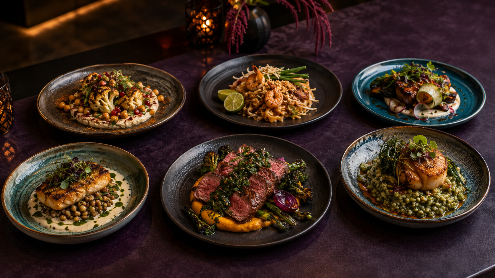

THE ROUTE DESK / NEW YORKSend us a
Send us a
taste signal.
Questions, story ideas and thoughtful corrections are welcome. Tell us what is on your stove or where your next culinary route should lead.

Questions, story ideas and thoughtful corrections are welcome. Tell us what is on your stove or where your next culinary route should lead.
